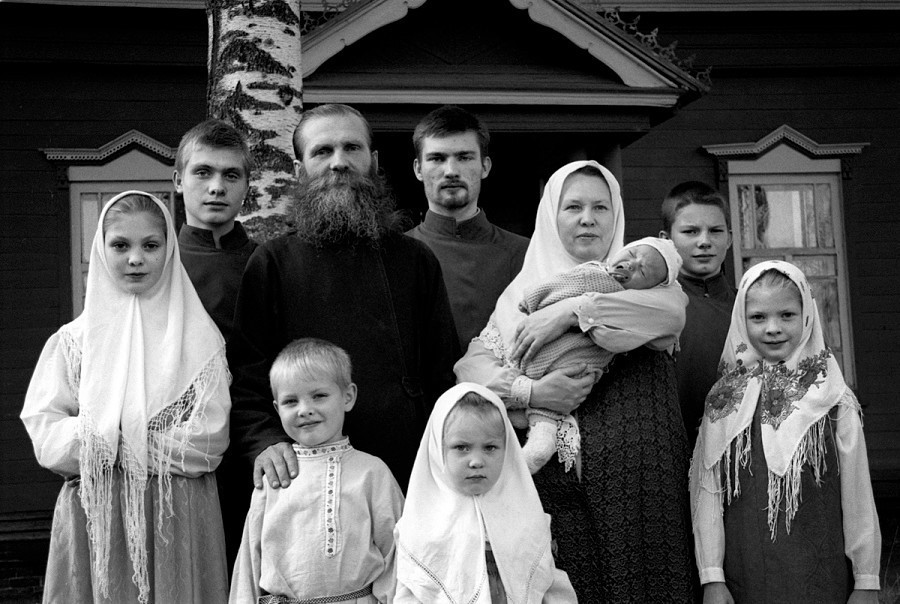
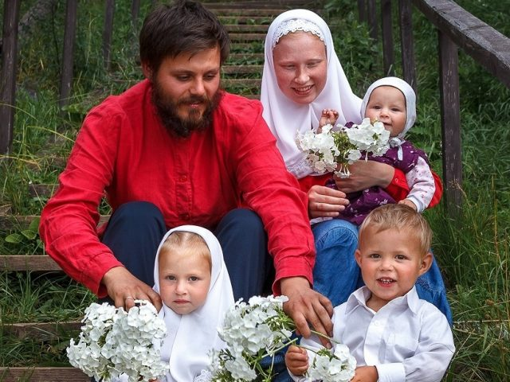

Семья в старообрядческой традиции
Если сравнивать старообрядчество с другими православными конфессиями, то первое, что бросается в глаза, это его семейственность. Все формы традиционной духовности тяготеют к традиционному социальному укладу и патриархальному укладу, но для старообрядчества это являлось едва ли не главным вопросом вероисповедания [14: 79]. Все знают знаменитые старообрядческие купеческие династии: Морозовых, Бугровых, Третьяковых. Но вопрос стоит глубже: почему капиталы, собираемые первыми старообрядческими предпринимателями, долгое время не выходили за семейно-родовые рамки — даже на уровень общины?
Тот, кто знаком с историей православия (в особенности православного миссионерства), подтвердит: цитаделями православного христианства всегда были монастыри. Именно иноки были равноапостольными первопроходцами, донеся Слово Божие до Индии и Китая. В монастырских библиотеках создавалось православное богословие, которое впоследствии оттачивалось на соборах высшего духовенства, которое с V века почти полностью было «чёрным». Инок, отрекшийся от всего мирского во имя Господа и Его Церкви, не обременённый житейскими невзгодами и обязанностями, — вот истинный воин Христов, с точки зрения высших образцов христианской аскетики. Таким образом, всю историю православия «вширь» и «вглубь» его двигали именно иночествующие.
Но при взгляде уже на первых деятелей старообрядчества мы видим иное положение вещей. Многие, в том числе передовые защитники христианской традиции, были женатыми: протопоп Аввакум, диакон Феодор Иванов, протопоп Логгин Муромский, протопоп Иоанн Неронов. В процентном соотношении противостоящие им новообрядцы были преимущественно монахами. Знаменитое «Житие» Аввакума живописует его злоключения, связанные со странствованиями в ссылку. Более того, дети Аввакума активно участвовали в его проповеднической деятельности — например, в распространении воззваний в краткий период потепления отношения властей к великому апостолу православной традиции [7: 269]. Именно о детях просил царя Аввакум [13: 19] — до сих пор не вполне ясно, имелись в виду его родные дети или многочисленные духовные чада, которых он умудрялся словесно окормлять даже из заточения.
Впоследствии, после Большого Московского собора, объявившего староверов уголовными преступниками, началось переселение хранителей древлего благочестия в отдалённые местности, впоследствии ставшие периферией Российской империи: в Сибирь, на Дальний Восток, на Кавказ, в Прибалтику. Однако это переселение почти всегда имело семейственный характер — это отличало старообрядчество как от схожих с ними в рвении и благочестии американских первопоселенцев-протестантов, так и от русского околоправославного сектантства, усилившегося к XIX веку (скопчества, хлыстовства, штунды и пр.). Само древлеправославие впоследствии разделилось на два основных течения: поповство и беспоповство. Беспоповцы не могли вступать в брак по причине отсутствия священства, могущего совершить Таинство Венчания [3: 150]. Соответственно, «династического» беспоповства быть не могло. Но, во-первых, вопрос «бессвященнословного» брака был в беспоповстве настолько актуальным [12], что приводил к самым главным размежеваниям и спорам внутри этого направления старообрядчества. Во-вторых, даже в отрицающих возможность брака беспоповских согласиях сформировались уникальные способы «продолжения рода» — например, посредством создания интернатов для сирот и беспризорников, чем занимался выдающийся федосеевский деятель Илья Ковылин. Таким образом, после смерти беспоповских предпринимателей (к числу наиболее богатых относился и упомянутый Ковылин), их капитал доставался не абстрактной «общине», а вполне конкретному общежительству, спаянному совместной жизнью, молитвой и трудовой деятельностью — фактически семье, хоть и не генетической.
Кроме того, именно в беспоповстве были изобретены своеобразные семейные монастыри — например, на Выге. Эти общежительства почти не имеют аналогов в христианской истории, сравниться с ними могут только различные неорелигиозные общины ХХ века.
Что касается поповцев, то почти все территории их расселения — если говорить о Ветке, Иргизе, некрасовцах, яицком казачестве — были единокровными анклавами. Целые старообрядческие области (особенно в случаях с польской Веткой и австрийской Буковиной) были пространствами, заселёнными одной большой семьёй.
К примеру, австрийские староверы достигли столь высокого уровня экономической самоорганизации и богатения, что впечатлили даже императора Иосифа II, даровавшего своим подданным липованам ряд эксклюзивных льгот [18]. Именно этим — белокриницким — староверам впоследствии довелось сыграть ключевую роль в истории старообрядчества как такового, возродив традиционную трёхчинную церковную структуру после присоединения к старообрядческому сообществу митрополита Амвросия [6].
Поскольку семья имеет множество социальных механизмов самоорганизации, она смогла мобилизовать и сохранить своих членов в сложные моменты. Это выгодно отличало поповцев как от беспоповцев (с их сложностью и запутанностью семейного вопроса), так и от противостоявшего древлеправославию чёрного духовенства официальной синодальной церкви. Живучесть приводила к тому, что после двух правительственных разорений Ветки (после включения этих земель в состав Российской империи) староверы сохранили и свой уклад, и своё вероисповедание в тех областях России, куда были переселены (например, на Кавказе или в Приволжье). Кроме того, Ветка неминуемо заселялась вновь после обоих «разорений», как отмечали исследователи.
Вторая кровавая страница старообрядческой истории — советская. Сибирское, дальневосточное и казахстанское старообрядчество, столкнувшись с агрессивно-безбожной властью, попыталось оказать сопротивление, но после его слома началась настоящая старообрядческая одиссея. Староверы стали переезжать в Китай. В Маньчжурии сформировались целые русские анклавы, зачастую бывшие первыми и единственными в освоении этих благодатных земель человеком. Эта страница истории подробно освящена приморским историком-профессором Юлией Аргудяевой в её многочисленных публикациях [1] [2]. После прихода в Китае к власти коммунистов в 1950-х гг. и гонений на религию старообрядцы начали бегство из Китая: в Австралию, Южную Америку, впоследствии — в некоторые североамериканские штаты и в Канаду. Это переселение также отличалось семейным характером: как правило, у переезжавших была одна фамилия, общее имущество и казна, сформированная доходом от совместной трудовой деятельности или от продажи общей недвижимости. Семейственность позволила староверам сохранить на чужбине не только своё вероисповедание, но до сих пор блюсти русский язык, быт и мировоззрение, являясь находкой для всех антропологов, изучающих выживаемость традиционных сообществ в наши дни. Все важные финансовые вопросы решались фактически на семейных советах. Там же принимались решения о переселении, об отправке «ходоков» для разведки новых земель и политической обстановки. Именно на семейных советах решались актуальные богословские вопросы — например, принятие священства Белокриницкой иерархии и избрание новых священников из своей среды.
Даже городские староверы — отметим, что их сообщества возникли сравнительно поздно, после ослабления первоначальных гонений — жили обособленно, слободами. Впоследствии с возникновением фабрик, которые могли располагаться внутри старообрядческих слобод, зачастую весь трудовой процесс полностью осуществлялся членами единой семьи [9: 24] [15].
Справедливости ради отметим, что именно городское старообрядчество в советское время подверглось особенным нападкам, и их источником была не столько антирелигиозная политика КПСС, сколько советский образ жизни. Постепенно вовлекая женщин в производство, расселяя работников по микрорайонам, используя в качестве средства социализации детские сады и обязательное школьное образование, советская власть добилась беспрецедентных успехов, каких не добивались ранее никакие гонители древлеправославия.
Для вдумчивых староверов это было знаком необходимости ухода из городов и замкнутой сельской жизни. Но наиболее дальнозоркие старообрядческие деятели увидели эту перспективу ещё в самой коммунистической доктрине, отрицая её не только своей эмиграцией в Китай, но и активным участием в белогвардейском движении, составляя целые казачьи полки со своими военными капелланами — старообрядческими священниками. Эта сила тормозила установление советской власти в Сибири и на Дальнем Востоке даже до конца 1920-х гг. Где бы ни проживали старообрядческие диаспоры — в Бразилии или на Аляске, — они всегда были обеспеченнее и социально здоровее коренного населения. Вопросы переселения, всегда наносящие важнейшие удары по самоорганизации любой общины, в старообрядческой среде решались вполне успешно. Всё это привело к тому, что сегодняшние старообрядческие сообщества — например, в США — являются наиболее устойчивыми и устоявшимися.
В чём кроется секрет старообрядческой семейственности? Безусловно, в традиционном мышлении, свойственном староверам [22]. В момент Раскола Аввакуму и его сподвижникам было ясно, что речь не просто о богословских новшествах, но о грандиозной социальной модернизации, об уничтожении той Руси, в которой они жили, которая их породила и в которой они хотели продолжить своё бытие. Староверы предвидели распад традиционных родоплеменных социальных связей, замену их на новые, политически ориентированные: когда бытие человека определялось либо городской средой (дававшей лично ему работу), либо средой сельской (тотально зависевшей от личности помещика, властного над землёй проживания и личными судьбами каждого). В новой России семья перестала быть способом выживания — она постепенно превращалась в анахронизм. И если на селе семейственность ещё была в какой-то мере актуальной аж до ХХ века для общинного хозяйствования, то и она полностью зависела от земельных перераспределений, сопровождавших смерть феодала или обусловленных его долгами и обеднением. Традиционное общество, в мировоззрении староверов считавшееся и считающееся нормальным положением вещей, основано на строгом детерминировании и разграничении социальных взаимоотношений. Имеется в виду кастовое структурирование общества, строгое социальное различение мужских и женских видов деятельности, образцов поведения, свойственных взрослому, юному и пожилому и т.д. Как следствие семейная община была универсальным способом выживания, гармонирования с природой и экономической эффективности. Семья была космосом для русского человека, его способом самореализации и постижения мироздания [5: 275]. Живя и трудясь во славу Бога, старовер имел над собой не абстракцию, а вполне конкретный семейный круг, всецело зависящий от действий каждого отдельного общинника. Трудясь во имя общины-семьи, старовер служил Богу, и результаты этого труда свидетельствовали как о личном благочестии, так и об истинности древлеправославия как такового [8: 50].
Максимализация российского феодализма (с беспрецедентным ужесточением крепостного права при Алексее Михайловиче) на грани перехода к капитализму требовала от политических деятелей XVII века создания нового типа государства — империи, рассматривающей каждого гражданина как непосредственного подданного государя, как его имущество, доступное для использования в захватнических войнах или в посессионных мануфактурах и факториях. Это означало неизменный упадок прежнего сословно-представительного государства, где между гражданином (как экономической единицей) и государем находилось множество промежуточных уровней соподчинения: семейный, родовой, общинный и т.д. Это и являлось экономической предпосылкой церковного раскола — необходимость сознания новой государственной идеологии (на тот момент, церковной), завязанной на волю «верхов» и радикально порвавшей с традиционностью, поскольку именно общинно-семейные социальные уровни снижали возможность использования гражданина как экономической единицы. Впоследствии некоторые старообрядческие писатели осознали этот момент — например, инок Евфимий, Алексей Самойлович, братья Денисовы. Но на момент Раскола первые проповедники древлего благочестия скорее интуитивно ощутили распад традиционного общества и попытки «сверху» выстроить новое, пирамидально общество, «качество» которого определялось не повседневным благочестием, а лояльностью государю и его чиновникам (включая огосударствлённую церковь).
Важной чертой русского менталитета, отмеченной В.О. Ключевским, является соборность. На неё — по мнению великого историка — повлияла обширность русских просторов, отсутствие скученности и зависимости от ограниченных природных ресурсов, как в Греции, на Балканах и в прочих изначально православных регионах. Каждая община была в большой мере самостоятельной, привыкшей решать все вопросы — от хозяйственных до вероисповедальных — на основе самоорганизации. Русская пословица «до Бога высоко, до царя далеко» обнаруживает этот факт: официальные власти не принимали столь важного арбитражного, координационного и регулятивного участия в жизни простых людей. Важнее было мнение старших, наиболее образованных и опытных. Таким образом, общинные (семейные) лидеры были носителями и хранителями основ социальной идентичности, которой для русичей до XVII века безоговорочно являлось традиционное православное христианство. С другой стороны, обширность русских ландшафтов и географическая отдалённость от кипучей политико-религиозной жизни Византии, привели к консервации определённых аспектов христианской догматики, символики и атрибутики, нормативов православного мышления. В качестве примера можно привести троеперстие, с XIV века весьма быстро распространившееся почти по всей православной вселенной, но почти не затронувшее великороссов.
Таким образом, хранителем православия на Руси была именно община. Но — в отличие от прочих христианских народов — на Руси община была почти исключительно семейной, спаянной не только совместной деятельностью, но и генетически, наследственностью и памятью предков. Произошло наслоение христианского вероучения на естественную семейную память, и возникло представление, которым пропитались все будущие старообрядцы — что древлее благочестие не идеология, а норма жизни. Следовательно, отказ от него ведёт к социальной аномии, к разрушению общества как такового, а затем — и к уничтожению индивида, поскольку его «ценность» исстари определялась на семейно-общинном уровне. Протест староверов против «бесчинной новой веры» носил не идеологический, а бытийственный характер. Словами старообрядческого философа Михаила Шахова,
«разрушение церковности и отказ от бытовых традиций шли рука об руку. Изоляция от перемен, консерватизм помогали староверам сохранить из поколения в поколение наследие традиционной русской культуры, уклада жизни» [21: 157].
Та черта, которую романтически настроенные искатели духовности периодически ставят в вину староверам — предпочтительное отступление, а не сопротивление — способствовала минимизации контактов носителей древлего благочестия с новообрядцами, заставила их ещё сильнее замкнуться в общинности, семейственности, родовой принадлежности.
В конце XIX — начале ХХ века в связи с расцветом капитализма в России эта старообрядческая особенность привела их к недолговременному торжеству (70% российского капитала находились в руках нескольких старообрядческих династий), потому что огромные капиталы предыдущие столетия накапливались в старообрядческих династиях, не тратились «наружу». Подобный процесс, обусловивший переход европейских еврейских общин от подавленного состояния к господствующему, красочно описан Вальтером Скоттом в его «Айвенго».
В конце ХХ века, когда на Западе начался отход от представления о регулятивной роли государства, наступила эпоха стремительного обогащения тех сообществ, которые, несмотря на растлевающее влияние имперско-капиталистической модернизации, смогли сохранить традиционные способы единства. Как следствие в США, Канаде, Бразилии, Уругвае, Австралии древлеправославные общины продемонстрировали не только высокий уровень социального и бытового благополучия, но и стабильность своего финансового положения, гибкость в приспособлении к сдвигам в экономической политике государства [4]. Сегодня старообрядческие общины США как носители «социального капитала» находятся в центре внимания большого числа социологов и антропологов, стремящихся найти и вычленить причины устойчивости и благополучия и возможность их перенесения на прочее американское общество. В России основные исследования уникальной старообрядческой экономики проводятся В.В. Керовым [10], Д.Е. Расковым [17] и Д.Г. Подвойским [16], большое внимание этой теме отведено также в трудах главного специалиста по старообрядческому мировоззрению — М.О. Шахова [20].
Резюмируем. Старообрядческая идентичность с самого начала строилась на семейственности, патриархальности и общинности, и эти черты отнюдь не являются ретроградными [11: 33] — они принадлежат к естественному порядку вещей, а потому и обеспечили выживаемость древлеправославных сообществ, донесших до наших дней не только вероисповедание, но и замечательные образцы старорусского менталитета, быта и культуры. Словами о. Валерия Шабашова:
«Наша Церковь горячо поддерживает старания руководства России, направленные на повышение качества труда, на всемерную борьбу с пьянством, наркоманией и курением. Мы полностью поддерживаем призывы к повышению трудовой дисциплины, к укреплению семьи как основной ячейки общества, государства. Поддерживая интересы страны, мы против увеличения числа разводов, безотцовщины, против сокращения рождаемости» [19].
Литература
- Аргудяева Ю.В. Семья и семейный быт приморский старообрядцев в Маньчжурии // Вестник ДВО РАН. — 2008. — № 5. — С. 143–158
- Аргудяева Ю.В. Эмиграция русских старообрядцев-дальневосточников в Китай и Северную Америку // Религиоведение. — 2012. — № 2. — С. 9–20.
- Барановский В.С., Поташенко Г.В. Староверие Балтии и Польши: краткий исторический и биографический словарь. — Вильнюс: Aidаi, 2005.
- Гошкодеря Ф. Русская семья в Орегоне // Старообрядецъ / Ред. Рудаков С.В. — 2004. — № 31. — С. 20–21.
- Громыко М.М. Мир русской деревни. — М., 1991.
- Дан Д. Липоване // Белая Криница: Издание Старообрядческой епархии Киевской и всея Украины РПСЦ. — 1999. — Июль. — С. 21–28.
- Житие протопопа Аввакума им самим написанное и другие его сочинения. — М.: Academia, 1934.
- Керов В.В. Всеблажайший изрядного тщания труд: У истоков трудовой этики староверов // Русские староверы за рубежом. Труды по русской и славянской филологии. Лингвистика. Новая серия. IV / Ред. Кюльмоя И.П. — Тарту: Изд-во Тартуского ун-та, 2000. — С. 46–57.
- Керов В.В. Династии старообрядцев-предпринимателей. Гучковы // Старообрядчество: история, культура, современность. Вып. 2 / Ред.: Ершова О.П., Осипов В.И., Соколова Е.И. — М.: Музей истории и культуры старообрядчества, 1995. — С. 22–25.
- Керов В.В. Конфессионально-этическая мотивация хозяйствования староверов в XVIII — XIX веках // Отечественная история. — 2001. — № 4. — С. 18–40.
- Климова С.В., Хирьянова Л.В. Традиционные основы семьи как главный фактор формирования идентичности старообрядчества в эпоху модернизации // Научные ведомости БелГУ. Серия «Философия. Социология. Право». — 2008. — Т. 14. — № 6. — С. 28–35.
- Лобанов В.Ф. «Незаконные» браки у старообрядцев Дальнего Востока (вторая половина XIX — начало XX в.) // Семья и семейный быт в восточных регионах России. — Владивосток, 1997. — С. 62–71.
- Мельгунов С.П. Великий подвижник протопоп Аввакум. — М.: Изд-во Т-ва И.Д. Сытина, 1907.
- Михаил (Семёнов), еп. Письма о преподавании Закона Божия // Михаил (Семёнов), еп. Святая литургия. Письма о преподавании Закона Божия. — Барнаул: Изд-во Фонда поддержки строительства храма Покрова Пресвятыя Богородицы РПСЦ, Лествица, 2002. — С. 53–122.
- Муравьёв А.В. Социальная альтернатива русского старообрядчества. Ч. 1 / Самарское староверие. — URL: http://samstar-biblio.ucoz.ru/publ/32-1-0-1491 (дата обращения 01.06.15).
- Подвойский Д.Г. Старообрядцы и русский капитализм // Человек. — 2005. — № 5. — С. 20–36.
- Расков Д.Е. Экономические институты старообрядчества. — СПб.: Изд-во СПбГУ, 2012.
- Сайко М.Н. Возникновение старообрядческих поселений на Буковине (70–80-е годы XVIII в. — начало XIX в.) // Старообрядчество: история, культура, современность. Вып. 1 / Ред.: Ершова О.П., Осипов В.И., Полонская Э.Д. — М.: Музей истории и культуры старообрядчества; Мир Отечества, 1994. — С. 31–50.
- Шабашов В., прот. Русская Православная Старообрядческая Церковь / Самарское староверие. — URL: http://samstar.ucoz.ru/news/protoierej_valerij_shabashov_russkaja_pravoslavnaja_staroobrjadcheskaja_cerkov/2012-01-24-5222 (дата обращения 06.09.19).
- Шахов М.О. Старообрядческое мировоззрение: Религиозно-философские основы и социальная позиция. — М.: Изд-во РАГС, 2001.
- Шахов М.О. Философские аспекты староверия. — М.: Третий Рим, 1998.
- Шмидт В.В. Патриархальный традиционализм — староверие — старообрядчество (проблемы и перспективы осмысления) // Государство, религия, Церковь в России и за рубежом. — М.: РАГС. — 2007. — № 3–4. — С. 161–195.